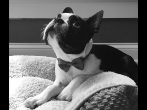

Welcome to Wind Hill Puppies!! We are a small kennel located in Central Illinois dedicated to providing quality Boston Terrier puppies to lovers of the breed. Our Bostons are a part of our family and a joy to be with. They are affectionate and loyal pets with a desire to please. We strive to breed quality pets with great temperaments and traditional Boston markings. We breed both black/white and red(seal)/white Bostons.
Our puppies receive daily attention from the entire family and come prespoiled. They are well socialized with adults, children and other dogs. All of our dogs are AKC registered. A one year health guarantee against genetic defect is provided with each puppy. Our puppies are always up-to-date on vaccination and deworming. We feed our adults and puppies Diamond Naturals dog food. Each new owner will receive a sample of Diamond Naturals small breed puppy food. Puppies are also provided with a great puppy starter kit full of information, coupons, toys, treats, etc. References from previous buyers and my vet are available upon request. Check out our “puppies” page for photos and available puppies. Please contact Tina with any questions. Thanks for visiting!!
